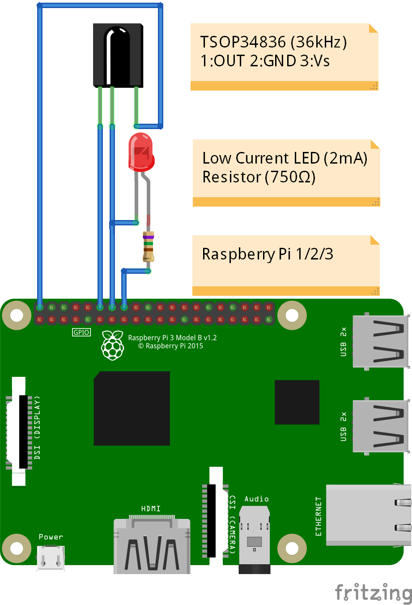

CONEXUS IR Raspberry Pi
by Alexander Feuster
About
The CONEXUS IR Raspberry Pi is a IR remote control replacement for Frontier Silicon based devices like the TechniSat DigitRadio or AudioMaster series which do not have an IR remote support on their own.
The CONEXUS IR project aims to make these devices usable with a regular TechniSat IR remote control by translating the IR commands into network API control commands which are supported.
Top
License
All CONEXUS IR project related files (binaries, source codes, scripts, graphics etc.) are provided "as-is" without any warranties for any data loss, device defects etc. Use at own risk!
Free for personal use. Commercial use is prohibited without permission.
Top
Content
Top
Prerequisites
For the CONEXUS IR Raspberry Pi assembly there are following prerequisites:
- Infrared receiver extension
- Raspberry Pi
- SD card with installed Linux (Raspbian "Stretch" recommended)
- LIRC configuration files
- CONEXUS and CONEXUS CONFIG SERVER binaries
- TechniSat IR Remote control for e.g. FBDVR401, FBDVR451, FBTV451 etc.
Top
Infrared receiver extension
The CONEXUS IR modification needs a hardware extension to make the Raspberry Pi capable of receiving infrared codes send by a remote control.
Since this project is intended to be used with original TechniSat remote controls all particular points in this instruction manual following hardware and software will be related to this.
If you want to use a different IR remote control you need to adapt the IR reception hardware as also the overall LIRC configuration and the "conexus.sh" BASH script.
Since the TechniSat remote controls are based on the Philips RC5 infrared systemcodes the infrared receiver needs to be a 36kHz variant to work properly.
For this project only the TSOP34836 IR receiver module has been tested and used but there may be also other compatible IR receiver modules working with 36kHz.
In case you do not use the TSOP34836 you need to figure out another compatible type on yourself.
The second part of the IR hardware extension is a status LED which will be used as confirmation for a received IR command. This part consist just of 2 parts: a low current LED and a resistor.
In case you want use another LED check and cahnge the resistor value according to this different LED specification.
The wiring of the IR hardware extension is not complicated and can be done directly to the Raspberry Pi pins.
Alternatively it can be also done onto a separate pin connector which allows the extension to be plugged and removed from the Raspberry Pi pin connector on demand.
Raspberry Pi IR extension PCB wiring schemata

Raspberry Pi IR extension PCB circuit schemata
Top
Raspberry Pi
The CONEXUS IR should run on every Raspberry Pi model with the depending binaries. So choose your preferred model.
To run CONEXUS IR you need Linux as OS on your Raspberry Pi. The CONEXUS project binaries have been compiled and tested with Raspbian "Stretch".
Although it might work on other distributions it is recommended to use an actual Raspbian release.
The next steps will describe a new system setup. If you are using an already existing system on your Raspberry Pi some steps may not be needed or may vary.
Steps
Download an actual Debian release image from the official Raspberry.org website.
Raspbian Download: https://www.raspberrypi.org/downloads/raspbian/
It is recommended to use the the "DESKTOP" variant but the "LITE" variant should work also but is more inconvenient to handle.
To install the Raspbian image on the
SD card proceed as in the following manual described:
Raspbian Image Installation: https://www.raspberrypi.org/documentation/installation/installing-images/README.md
There are also other ways possible to install the Raspbian image on a SD card, for e.g. with the "dd" command on Linux. Check google for according How-To's.
After the image has been written on the SD card, insert the SD card into your Raspberry Pi, boot it up and configure it for your needs.
If the Raspberry Pi is connected via LAN to your local network in most cases the standard DHCP setting should work fine. In case you are using WIFI or the Raspberry Pi should run with a static network setting,
do also configure youre network setting before proceeding.
Keep in mind that the CONEXUS IR Rasperry Pi and the remote radio or loudspeaker which is inteded to be controlled need to be within the same local network!
The Raspbian OS should now be actualized.
If you are running Raspbian with desktop open for e.g. "LXTerminal" from the main menu and update the system with the following command line:
sudo apt-get update -y && sudo apt-get upgrade -y
Your system should be now up-to-date.
Now you can change your Raspberry Pi's host name. This is optional but makes things later easier when using the CONEXUS configuration server.
In terminal enter the following command:
sudo raspi-config
Now choose menu:
2 Network Options "Configure network settings"
and the menu item:
N1 Hostname "Set the visible name for this Pi"
Here you can enter the new host name. This manual will refer from now on with the name "CONEXUS" so enter:
CONEXUS
Leave the Raspberry Pi Software Configuration Tool with:
<Finish>
and let the Raspberry Pi reboot.
The Raspberry Pi should no be ready to be used as base for CONEXUS IR.
Top
LIRC / LED control
The CONEXUS IR does not only depend on the IR hardware modification it needs also a software to identify, analyze and execute the received infrared commands send from the IR remote. This is done with LIRC ("Linux Infrared Remote Control").
The status LED which shall signalize a received IR command needs also to be controlled via the connected GPIO pin. The GPIO control will be handled with WiringPi ("GPIO Interface library for the Raspberry Pi")
Steps
To install the needed packages open the terminal again and enter the following command line:
sudo apt-get install lirc wiringpi
Depending on your system these packages can be already installed or may be just upgraded to newer versions.
LIRC needs additional setup steps. Therefore we need a texteditor. On a desktop system you can use for e.g. "LEAFPAD", within a terminal or on a LITE Raspbian "NANO".
This manual will refer to nano. If you want to use your preferred texteditor or Leafpad you have to adapt all command lines with "nano" according to your texteditor!
To enable the lirc-rpi kernel module enter in the terminal:
sudo nano /boot/config.txt
Scroll to the line:
# Uncomment this to enable the lirc-rpi module
If there is already a "dtoverlay=lirc-rpi..." entry available change the existing line to "#dtoverlay=lirc-rpi..." by adding a "#". Now add there:
dtoverlay=lirc-rpi,gpio_out_pin=17,gpio_in_pin=18,gpio_in_pull=up
Now save the edited file and close nano with CTRL+O and CTRL+X.
Keep in mind that this gpio_in_pin configuration must be exactly the same (pin 18) as in the IR receiver hardware modification!
The gpio_out_pin needs to be set for the LIRC kernel module but is not used for CONEXUS IR since this outgoin pin is only for IR diodes which transmit IR codes instead of receiving them.
Now open the LIRC configuration with:
sudo nano /etc/lirc/lirc_options.conf
and change the following to entries to these values:
driver = default
device = /dev/lirc0
Now save the edited file and close nano with CTRL+O and CTRL+X.
LIRC now needs the remote codes from the used IR remote to identify these IR commands. All known TechniSat codes can be found in:
File: TECHNISAT_RC5.conf
Copy this file with a file explorer or via Linux "cp" command to:
/etc/lirc/lircd.conf.d/TECHNISAT_RC5.conf
LIRC needs also to know what an single IR command should execute. All these IR command bindings can be found in:
File: lircrc
Copy this file with a file explorer or via Linux "cp" command to:
/etc/lirc/lircrc
If the file does already exist do overwrite it.
These binding are executed by LIRC's "irexec". To start "irexec" after every Raspberry Pi boot we need to set up a cron job.
Open a terminal and enter:
crontab -e
Now add the following line:
@reboot /usr/bin/irexec -d /etc/lirc/lircrc
Now save the edited file and close with CTRL+O and CTRL+X.
The LIRC part of CONEXUS IR is now installed and configured.
Top
CONEXUS
The IR commands recognized by LIRC need to be executed and to be send via network to the remote device.
Therefore we need a CONEXUS binary and an additional Bash script.
Steps
Depending on your Raspberry Pi model you need to choose the appropriate binary archive.
For Raspberry Pi 1 and Raspberry Pi Zero:
Archive: CONEXUS-2.4-ARM-RPI1.tar.gz
For Raspberry Pi 2 and Raspberry Pi 3:
Archive: CONEXUS-2.4-ARM-RPI2.tar.gz
Extract the archive and copy the binary "Conexus-ARM" to:
/usr/bin/conexus
and make it executable:
sudo chmod 755 /usr/bin/conexus
If you need to compile your own CONEXUS binary check Github for the sourcecode:
CONEXUS CLI repository: https://github.com/feuster/Conexus_CLI
Now copy the Bash script "conexus.sh" to:
/boot/conexus.sh
and make it also executable:
sudo chmod 755 /boot/conexus.sh
If you do not want to use the optional CONEXUS Config Server you will have to edit the "conexus.sh" Bash script:
sudo nano /boot/conexus.sh
Edit your desired IR code and the IP of the device which you want to remote control. Change also the PIN if it is not the default 1234.
Do not edit anything else!
Now save the edited file and close with CTRL+O and CTRL+X.
Optional you can also install the CONEXUS Config Server which provides a webinterface for an easy configuration of the remote device within the "conexus.sh" Bash script.
Depending on your Raspberry Pi model you need to choose the appropriate binary archive.
For Raspberry Pi 1 and Raspberry Pi Zero:
Archive: CONEXUSCFGSVR-1.0-ARM-RPI1.tar.gz
For Raspberry Pi 2 and Raspberry Pi 3:
Archive: CONEXUSCFGSVR-1.0-ARM-RPI2.tar.gz
Extract the archive and copy the binary "ConexusCfgSvr-ARM" to:
/usr/bin/conexuscfgsvr
and make it executable:
sudo chmod 755 /usr/bin/conexuscfgsvr
If you need to compile your own CONEXUS Config Server binary check Github for the sourcecode:
CONEXUS Config Server repository: https://github.com/feuster/Conexus_Config_Server
The CONEXUS Config Server must be started after every Raspberry Pi boot so we need to set up another cron job.
Open a terminal and enter:
crontab -e
Now add the following line:
@reboot sudo /usr/bin/conexuscfgsvr -s /boot/conexus.sh
Now save the edited file and close with CTRL+O and CTRL+X.
The CONEXUS Config Server is now installed and configured.
To run every software component properly we need a last reboot by a powercut or by following terminal command:
sudo reboot
If you have already configured the "conexus.sh" Bash script properly CONEXUS IR should already be useable.
If you are using the CONEXUS Config Server you can now edit the remote configuration within your browser by calling:
CONEXUS Config Webinterface: http://conexus
If your local LAN does not redirect to the CONEXUS hostname you can still call the webinterface by the local IP of the Raspberry Pi.
Within the Webinterface you can easily change the remote device settings on-the-fly so after a change a restart is not needed.
Top
Copyright & Github
CONEXUS IR Raspberry Pi
by Alexander Feuster
Copyright 2018
Find the latest revision of this document at:
https://github.com/feuster/Conexus_IR_RPi